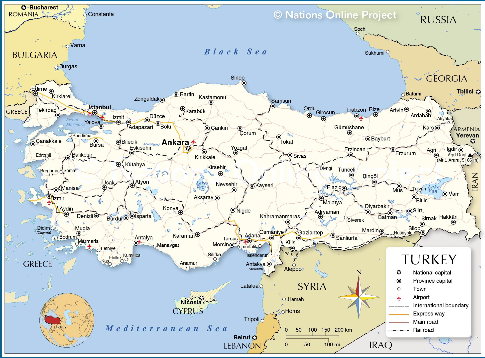
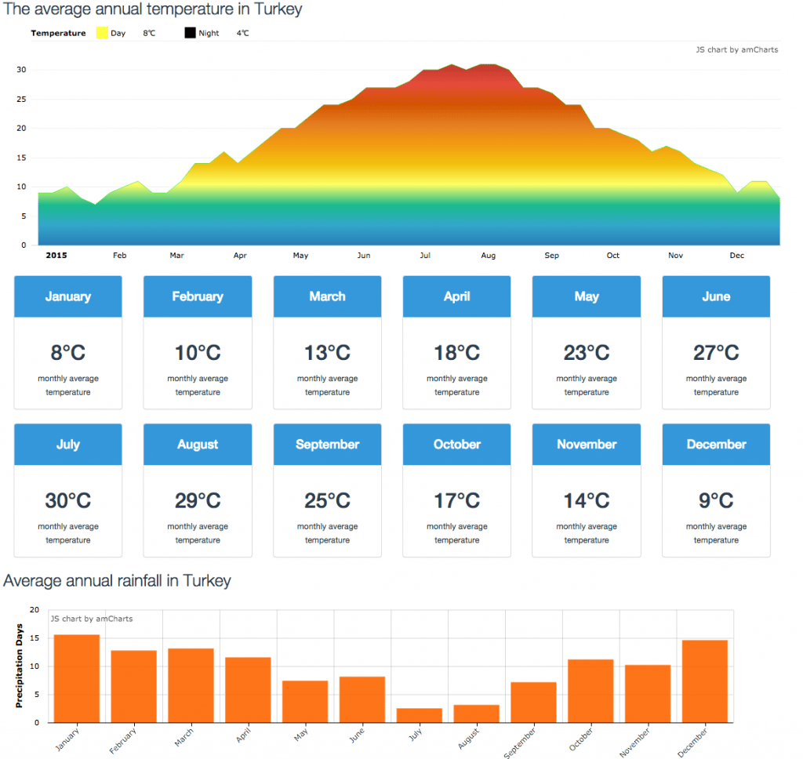
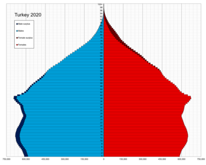
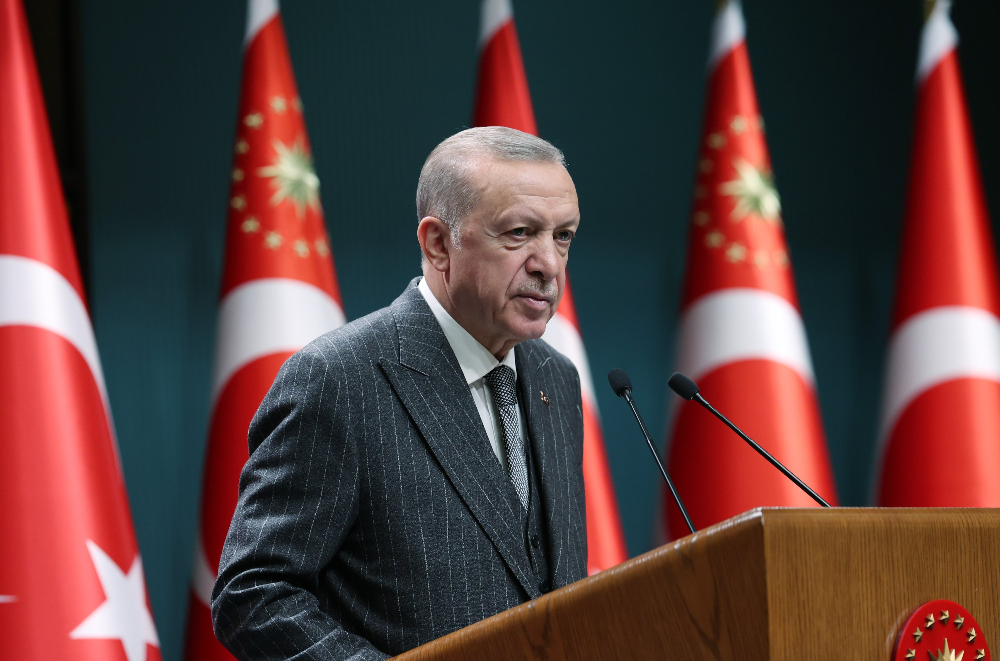
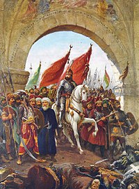

Turkey, formerlly known as the Ottoman empire and now Turkiye is the 33rd largest country in the world and one of the largest transcontinental countries in the world with a land area of roughly 783 thousand square km and around 85 million people living there. The capital of Turkiye is Ankara however the largest city is Istanbul. Turkiye is 7 hours ahead of us (GMT-4) as they use the GMT+4 timezone. Turkiye uses the turkish lira as their currency as well as the euro as their second most used currency and are sitting at a GDP of around $850 billion.
It is found primarily in Western Asia on the Anatolian Peninsula, with a tiny section in Southeast Europe on the Balkan Peninsula. Its neighbours are Georgia to the northeast, Armenia, Azerbaijan, and Iran to the east, Iraq to the southeast, Syria and the Mediterranean Sea to the south, the Aegean Sea to the west, and Greece and Bulgaria to the northwest as well as Cyrprus a small country off the south coast of Turkiye, It also shares boundaries with the Black Sea to the north.
In Turkey, summers are usually hot and sunny, and the climate varies depending on the region. On the Aegean and Mediterranean coasts, temperatures reach 30 degrees Celsius in July. In the Black Sea, winter temperatures are around 10 degrees Celsius. The climate on the Anatolian plateau is harsh, with summers that are very hot. Furthermore, the east side is much cooler and less humid than the west side of Turkiye.
As of the end of 2021 the population of Turkiye was 84.7 million people with a growth rate of .55%-1.09% increase per year and is expected to reach all time highs of 98 million by 2059 and drop back down to current numbers by the end of this century. The population is quite young with 22.4% of the population being withing the ages of 0-14 and the median age in Turkiye was around 33 years old. Turks are the largest ethnic group at around 70-75% followed by the Kurds at around %20 as well as the Balkans and Arabs covering the remaining percentage.
The current president of Turkey is Reccep Tayip Erdogan who has been a politician since 1994. Mayor of Istanbul from 1994-1998, Prime Minister of Turkiye from 2003-2014 and presdient of Turkiye from 2014-present.
The Ottoman Empire was founded by Turkish tribes in Anatolia and developed into one of the most powerful empires to rule the globe in the 15th and 16th century.Over 600 years later, the Ottoman Empire fell in 1922, when the Turkish Republic took its place.
